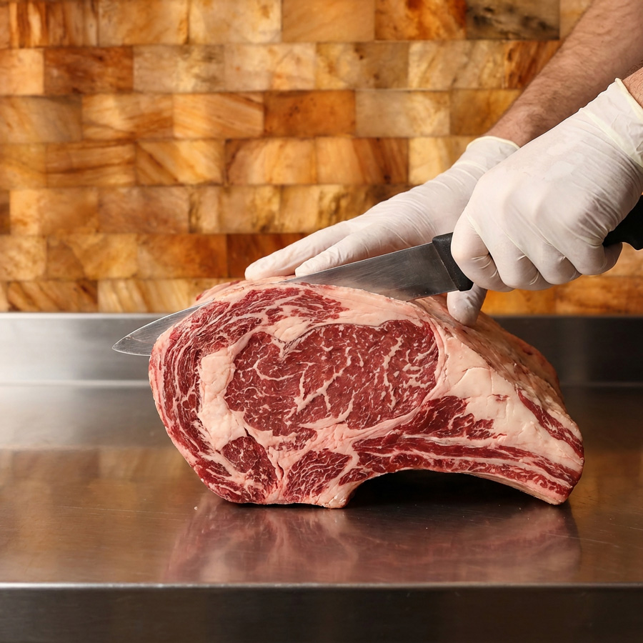

The Butcher’s Case
Hand-Cut.
Right in Front
of You.
Hand-cut daily and thoughtfully sourced, our butcher’s case reflects a commitment to quality you can see. From everyday staples to special-occasion cuts, our selection rotates with the seasons and what looks best that day.

The Butcher’s Case
Crafted In-House.
Cut to Order.
From beautifully marbled steaks to house-made sausage and specialty cuts.
The Full Selection
Hand-cut daily and thoughtfully sourced — our case rotates with the seasons. Stop in or call to see what’s available today.
- Ground Beef
- Back Ribs
- Blade Steak
- Bottom Round
- Brisket
- Chuck Eye Steak
- Chuck Roast
- Cube Steak
- Denver Steak
- Eye Round
- Filet Mignon
- Flank Steak
- Flat Iron
- Hanger Steak
- London Broil
- New York Strip Boneless
- New York Strip Bone-In
- Porter House
- Prime Rib Bone-In
- Prime Rib Boneless
- Ribeye Boneless
- Ribeye Bone-In
- Rump Roast
- Shank Cross Cut
- Short Ribs
- Sierra Steak
- Skirt Steak
- T-Bone Steak
- Top Round
- Top Sirloin
- Top Sirloin Filet
- Tri-Tip
- Marrow Bones Sliced
- Bones Stock / Bone Broth
- Ground Pork
- Belly
- Blade Roast
- Chops Boneless
- Chops Bone-In
- Chops T-Bone
- Country Style Ribs
- Fatback
- Hock
- Jowl
- Loin Roast Boneless
- Loin Roast Bone-In
- Shank
- Shoulder Picnic
- Shoulder Boston Butt
- Spare Ribs
- St. Louis Ribs
- Baby Back Ribs
- Tenderloin
- Eye Round Filet
- Salt Pork
- Bones Soup / Broth
- Lard
- Leg
- Rack
- Shoulder
- Ground
- Shank
- Stewing
- Springer Mountain WOGS
- Springer Mountain Portion Cuts
- Chicken Thigh Boneless Skinless
- Chicken Wings
- Chicken Feet
- Airline Breast
- Boneless Skinless Breast
- Duck
- Duck Legs
- Duck Fat
- Canadian Peameal Bacon
- Smoked Bacon
- Bacon Ends
- Jowl Bacon
- Sweet Italian Ground
- Sweet Italian Link
- Hot Italian Link
- Brats
- Jalapeño Cheddar
- Knackwurst
- Linguiça
- Mexican Chorizo
- Chorizo Verde
- Al Pastor
- Breakfast Sausage
- Beef Jerky